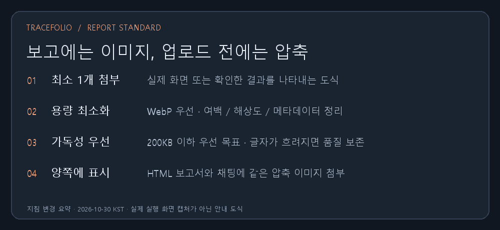

Codex 설정설정
Codex 설정설정모든 결과 보고 이미지 필수 첨부·용량 압축 지침 적용
완료전역 지침과 작성 가이드에 이미지 필수 첨부 및 가독성을 보존하는 압축 기준을 추가했습니다.
작업 결과
앞으로 최종 결과 보고에는 최소 1개의 실제 결과 이미지 또는 정확한 결과 도식을 채팅과 HTML 양쪽에 첨부합니다.

변경 내용
적용 내용
전역 AGENTS.md와 게시물 작성 가이드에 이미지 필수 첨부, UI 실제 화면과 비UI 도식의 구분, 공개 경로 사용, 여백·해상도·메타데이터 정리, WebP 우선 검토, 무손실 대안 및 품질 검증을 기록했습니다. 이미지당 200KB 이하를 우선 목표로 하며 판독성을 우선합니다. 이미지가 제한되면 첨부 미완료를 명시하도록 했습니다. 설치된 전역 지침은 기존 파일을 백업한 뒤 갱신했습니다.
검증
설치된 전역 지침과 저장소 AGENTS.md SHA-256 일치 확인. 이번 안내 도식은 실제 화면 캡처로 오인하지 않도록 지침 변경 요약임을 표시했습니다. 원본 PNG 33,520바이트를 무손실 WebP 13,386바이트로 줄였습니다. 이미지 크기는 1000×460을 유지했고 디코딩 및 실제 이미지의 글자 판독을 확인했습니다. OpenAI Docs 스킬을 참고했으며 공식 AGENTS 안내: https://learn.chatgpt.com/docs/agent-configuration/agents-md
남은 사항
기존 과거 보고서 전체의 이미지 재압축은 이번 요청 범위에서 수행하지 않았습니다. 새 규칙은 앞으로의 결과 보고에 적용합니다.
작업 시간
- 제안 시간: 2–4분
- 실제로 완료된 시간: 시작 2026-10-30 03:16:51 KST. 지침·이미지 생성 및 검증 2026-10-29T18:18:40.384Z UTC. 푸시·공개 배포 완료는 최종 안내에 구분해 기록합니다.
- XERJ: 미사용 — 코드 검색 불필요 — 보고 지침과 가이드 수정 및 이미지 파일 검증